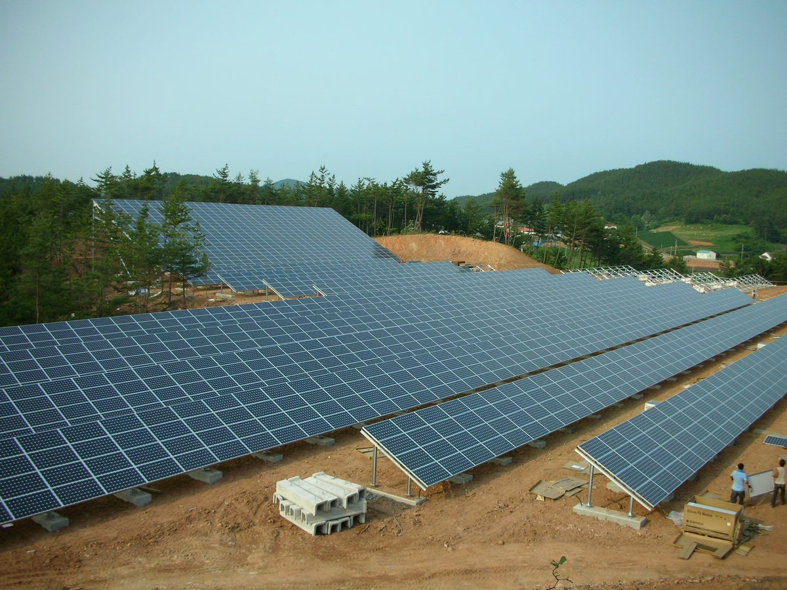

환경운동연합, 재생에너지 공공성 보고서 내고 3MW 넘는 발전 허가권 지방 이양·이익공유 지역사회 기금화 제안

주민 사전고지 최소 21일로, 주민참여 법인 경영공시 의무화…설비 약 90% 민간 소유 구조 바꾸려 발전공기업 통합 법인을 전환 주체로
환경운동연합이 재생에너지 확대 과정에서 공공 부문과 지역의 역할을 키우자는 『재생에너지 공공성 보고서』를 펴내고, 3MW를 넘는 발전사업 허가권을 지방정부로 넘기는 '에너지 자치 분권 특별법' 제정 등을 제안했다. 보고서는 정부 목표가 2030년 재생에너지 설비 100GW인데 2024년 기준 태양광·풍력은 설비 약 29GW, 발전량 비중 약 7%에 머물고, 국내 설비의 약 90%를 민간이 소유해 확대 속도가 기업 투자와 시장 형편에 달려 있다고 진단했다. 정부가 지난 9월 발전 5사를 한전 100% 자회사 ㈜한국발전으로 묶어 2027년 10월 출범시키겠다는 계획을 내놓은 가운데, 보고서는 핵발전을 뺀 발전공기업 통합 법인이 해상풍력·산업단지 태양광 같은 대규모 사업과 탈석탄 지역·노동자의 정의로운 전환을 맡고, 재원은 녹색투자공사 설립과 공적 연·기금 투자 확대, 녹색분류체계에서 LNG·핵발전 제외 등으로 마련하자고 했다. 법·제도 분야에서는 2021년 탄소중립기본법 제정 뒤 법적 근거를 잃은 에너지기본계획을 되살리고, 재생에너지법을 기본법 체계로 바꿔 발전공기업·지자체·협동조합의 역할을 정하자고 요구했다. 주민참여와 관련해서는 보고서가 현행 7~14일로 적은 발전사업 허가 전 주민 사전고지 기간을 최소 21일로 늘리고 주민 의견 검토 결과를 공개하며, 투자한 일부 주민에게 몰린 이익공유를 지역사회 기금처럼 공동체 전체가 나누는 방식으로 넓히자고 제안했다. 주민참여 법인의 수입·비용·이익 배분을 공개하는 경영공시 의무화와 지자체의 이익공유 관리 전담기관 지정, 주민주도 재생에너지 협동조합 지원 강화도 함께 담겼다.
시민에너지 관점
설비 약 90%를 민간이 가진 구조에서 주민 몫은 대개 투자에 참여한 일부 주민의 배당에 그쳤고, 보고서가 이익공유를 지역사회 기금으로 넓히고 참여 법인의 경영공시를 의무로 하자고 한 것은 그 빈틈을 짚은 제안으로 보인다. 허가권을 지방에 넘기거나 사전고지를 21일로 늘리면 사업이 더 늦어진다는 우려가 나올 수 있지만, 계획 단계에서 주민 의견을 듣고 검토 결과를 공개하는 절차는 착공 뒤에 터지는 갈등을 줄이는 쪽으로 작동할 수 있다. 다만 공기업이 맡는 대규모 사업만으로는 지역이 발전소의 주인이 되기 어렵고, 지역사회 기금도 주민과 협동조합이 발전소 지분을 직접 가질 때 꾸준히 채워진다. 정부와 국회는 재생에너지 기본법 논의에서 주민참여 법인 경영공시와 지역사회 기금, 주민·협동조합 지분 참여의 몫을 함께 정해야 한다.
출처: 에코저널 2026-10-29 이정성 원문 보기
環境運動連合、再生可能エネルギー公共性報告書を発表し3MW超の発電許可権の地方移譲と利益共有の地域社会基金化を提案
住民への事前告知を最低21日に、住民参加法人の経営公示を義務化…設備の約90％が民間所有の構造を変えるため発電公企業の統合法人を転換の主体に
韓国の環境団体・環境運動連合は、再生可能エネルギー拡大の過程で公共部門と地域の役割を強めるべきだとする『再生可能エネルギー公共性報告書』を出し、3MWを超える発電事業の許可権を地方政府に移す「エネルギー自治分権特別法」の制定などを提案した。報告書は、政府目標が2030年に再生可能エネルギー設備100GWであるのに対し、2024年時点で太陽光・風力は設備約29GW、発電量の比率約7％にとどまり、国内設備の約90％を民間が所有しているため、拡大の速度が企業の投資と市場の状況に左右されていると診断した。政府が9月に発電5社を韓国電力の100％子会社「韓国発電」に統合して2027年10月に発足させる計画を示すなか、報告書は原子力を除く発電公企業の統合法人が洋上風力や産業団地の太陽光などの大規模事業と、脱石炭に伴う地域・労働者の公正な移行を担い、財源は緑色投資公社の設立や公的年金・基金の投資拡大、グリーン・タクソノミーからのLNG・原子力の除外などで確保すべきだとした。法制度の面では、2021年の炭素中立基本法の制定後に法的根拠を失ったエネルギー基本計画を復活させ、再生可能エネルギー法を基本法の体系に改めて発電公企業・自治体・協同組合の役割を定めるよう求めた。住民参加については、報告書が現行7〜14日とする発電事業許可前の住民への事前告知期間を最低21日に延ばし、住民意見の検討結果を公開するとともに、投資した一部の住民に偏った利益共有を、地域社会基金のように共同体全体で分け合う方式に広げるよう提案した。住民参加法人の収入・費用・利益配分を公開する経営公示の義務化、自治体による利益共有管理の専門機関の指定、住民主導の再生可能エネルギー協同組合への支援強化も盛り込まれた。
市民エネルギーの視点
設備の約90％を民間が持つ構造のもとで、住民の取り分は多くの場合、投資に参加した一部住民への配当にとどまってきたが、報告書が利益共有を地域社会基金に広げ、参加法人の経営公示を義務化しようとしたのは、その隙間を突いた提案に見える。許可権を地方に移したり事前告知を21日に延ばしたりすれば事業がさらに遅れるとの懸念もありうるが、計画段階で住民の意見を聞き、検討結果を公開する手続きは、着工後に噴き出す対立を減らす方向に働きうる。ただ、公企業が担う大規模事業だけでは地域が発電所の持ち主になるのは難しく、地域社会基金も住民と協同組合が発電所の持ち分を直接持ってこそ安定して積み上がる。政府と国会は再生可能エネルギー基本法の議論の中で、住民参加法人の経営公示と地域社会基金、住民・協同組合の持ち分参加の取り分をあわせて定めるべきだ。
出典: Eco Journal 2026-10-29 Lee Jung-sung 原文を読む
韩国环境运动联合发布可再生能源公共性报告，提议将3MW以上发电许可权下放地方、利益共享改为社区基金
居民事先告知期至少延长至21天，居民参与法人经营公示义务化；为改变约90%设施由民间持有的结构，主张以发电国企合并法人为转型主体
韩国环保团体环境运动联合发布《可再生能源公共性报告》，主张在扩大可再生能源的过程中加强公共部门和地方的作用，并提议制定"能源自治分权特别法"，把3MW以上发电项目的许可权移交给地方政府。报告分析指出，政府目标是到2030年可再生能源装机达到100GW，但截至2024年太阳能和风电装机仅约29GW，发电量占比约7%，且国内约90%的设施由民间持有，扩大速度取决于企业投资和市场状况。在政府于9月提出将五大发电公司合并为韩国电力公社全资子公司"韩国发电"、计划于2027年10月成立之际，报告主张由不含核电的发电国企合并法人承担海上风电、产业园区太阳能等大型项目，以及退煤地区和劳动者的公正转型，资金则通过设立绿色投资公社、扩大公共年金和基金投资、把液化天然气和核电排除在绿色分类标准之外等方式筹措。在法律制度方面，报告要求恢复2021年《碳中和基本法》制定后失去法律依据的能源基本计划，并把可再生能源法改为基本法体系，明确发电国企、地方政府和合作社的角色。在居民参与方面，报告提议把它所称现行7至14天的发电项目许可前居民事先告知期至少延长到21天，并公开居民意见的审议结果，同时把集中在部分出资居民身上的利益共享，扩大为像社区基金那样由整个社区分享的方式。报告还提出，居民参与法人应依法公开收入、费用和利益分配等经营信息，地方政府应指定负责管理利益共享的专门机构，并加强对居民主导的可再生能源合作社的支持。
市民能源视角
在约90%设施由民间持有的结构下，居民所得大多仅限于部分出资居民的分红；报告提出把利益共享扩大为社区基金、并让参与法人承担经营公示义务，似乎正好抓住了这一缺口。有人可能担心，下放许可权或把事先告知延长到21天会让项目更慢，但在规划阶段听取居民意见并公开审议结果，反而可以减少开工后才爆发的冲突。不过，仅靠国企承担的大型项目，地方很难成为电站的主人；社区基金也只有在居民和合作社直接持有电站股份时，才能持续得到充实。政府和国会在讨论可再生能源基本法时，应把居民参与法人的经营公示、社区基金以及居民和合作社的持股份额一并写入。
来源: Eco Journal 2026-10-29 Lee Jung-sung 查看原文
KFEM report on the public character of renewables proposes handing permits for plants over 3 MW to local governments and turning benefit sharing into community funds
Minimum 21-day advance notice to residents and mandatory disclosure by resident-participation companies; with about 90% of capacity privately owned, the group wants a merged state generator to lead the transition
The Korean Federation for Environmental Movements (KFEM) has published a report on the public character of renewable energy, calling for a bigger role for the public sector and local communities as renewables expand and proposing, among other things, a special act on energy self-government and decentralisation that would transfer permitting for power projects above 3 MW to local governments. The report notes that while the government targets 100 GW of renewable capacity by 2030, solar and wind stood at about 29 GW of capacity and about 7% of generation as of 2024, and that with about 90% of domestic capacity in private hands, the pace of expansion depends on corporate investment and market conditions. With the government having announced in September a plan to merge the five power generation companies into a wholly owned KEPCO subsidiary, Korea Power Generation (Hanguk Baljeon), to be launched in October 2027, the report proposes that a merged state generator excluding nuclear take charge of large projects such as offshore wind and industrial-park solar as well as a just transition for coal regions and workers, funded through a new green investment corporation, more investment by public pension and other funds, and the removal of LNG and nuclear from the green taxonomy. On law and planning, it calls for restoring the national energy master plan, which lost its legal basis after the 2021 carbon neutrality framework act, and for recasting the renewable energy act as a framework law that defines the roles of state generators, local governments and cooperatives. On resident participation, it proposes extending the pre-permit notice period for residents, which the report puts at 7 to 14 days today, to at least 21 days, publishing how residents' comments were handled, and broadening benefit sharing, now concentrated among a few investing residents, into community-wide forms such as community funds. It also calls for mandatory disclosure of revenue, costs and profit distribution by resident-participation companies, designated local bodies to manage benefit sharing, and stronger support for resident-led renewable energy cooperatives.
Citizen Energy View
With about 90% of capacity privately owned, residents' share has mostly been limited to dividends for the few who invested, and the report's call to widen benefit sharing into community funds and require disclosure by participating companies appears to target exactly that gap. Some may worry that devolving permits or extending notice to 21 days will slow projects further, but hearing residents at the planning stage and publishing how their views were handled can reduce the conflicts that otherwise erupt after construction begins. Large projects run by state companies alone, however, will not make communities owners of their power plants, and community funds are filled steadily only when residents and cooperatives hold equity in the plants themselves. As the government and the National Assembly debate a renewable energy framework law, they should set disclosure rules for resident-participation companies, community funds and a share for resident and cooperative equity together.
Source: Eco Journal 2026-10-29 Lee Jung-sung Read the original